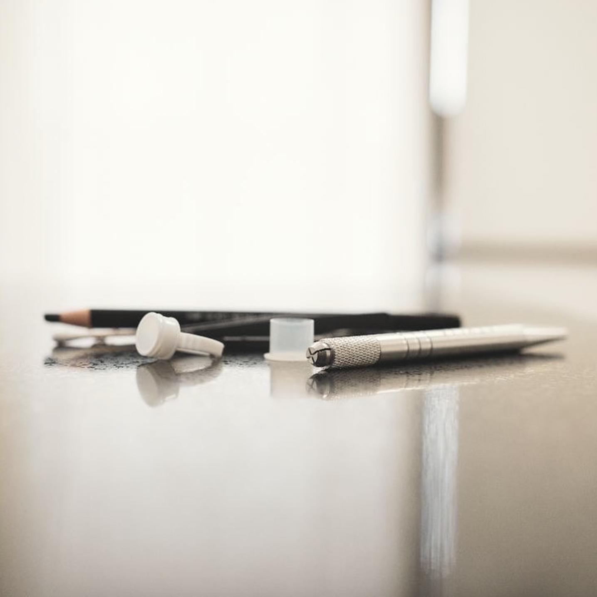
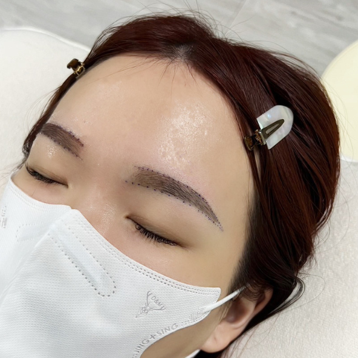
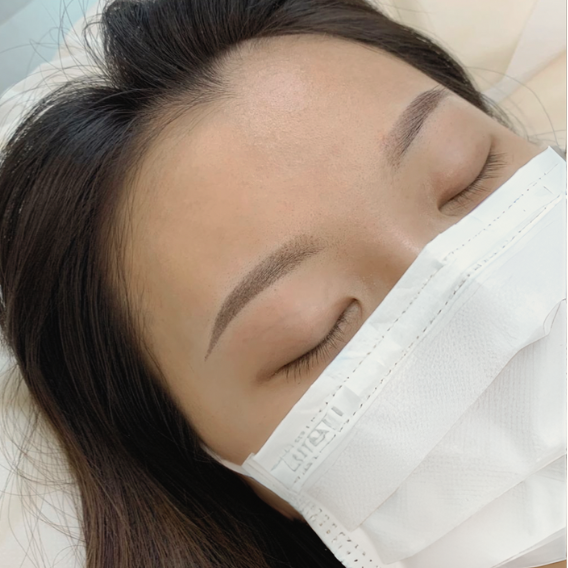

粉霧眉
粉霧眉
柔和的色調和自然的效果
改善眉型和垂眼
讓素顏也可以自信有精神
施作後不結痂也無過渡期
並且採用SGS合格色乳
使用一人一組拋棄式耗材
衛生又安全
ATTENTION.
注意事項
- 有糖尿病、蟹足種體質與懷孕都不能操作
- 事前會先確認過敏史，以及服用中的西藥或中藥等
- 維持時間，會因個人體質的代謝速度不同有所差異，約可維持1~3年，後續可選擇補色維持
PROCESS.
施作流程

討論
操作前會和霧眉師討論適合的眉型及顏色，若平時有畫眉毛的習慣， 也可以告知做為參考，霧眉師評估後，會設計出符合您需求的眉型。

前置作業
和霧眉師討論出理想的眉型後，利用工具輔助測量眉頭間距，確定位置後用眉筆先定型和定位， 必要時可能會修剪原生眉毛，將超出眉型的細毛剃除。

操作
在霧眉開始上色前，會敷上舒緩膏，約30分鐘後舒緩效果開始才上色，依照先前討論好的眉型下針，將色料導入皮層，再利用工具輔助測量眉頭間距， 確定位置後用眉筆定型和定位，最後只要在術後保持乾爽，等結痂自然脫落，就完成了。
PRICE LIST.
價目表
| 手工粉霧眉一次 (且含3個月內免費補色一次) |
$5500 |
|---|
| 初次嫁接享 | 85折 |
|---|---|
| 當月壽星個人享 | 9折 |
| 學生憑學生證個人享 | 9折 |
以上優惠皆不可重複併用
Q&A.
常見問答
此霧眉是屬於慢工出細活的紋繡方式，整個過程約是60~90分鐘左右。
依據每個人的代謝速度不同，維持時間也會有所不同，通常為1~3年，後續可以選擇補色的方式來延長效果。
在開始前會先敷上舒緩膏，會大幅降低紋繡的感受度，過程中如果還是感到不適都可以馬上跟我們反應喔！
霧眉後可能會有輕微紅腫情形，但並不會持續太久，滲血情形也不會太多。
通常第一次做眉毛主要以自然及眉型為主，需要補完色才是最佳效果，因此大部分的人，眉毛都需要二次補色後，才能呈現完整的飽和度。
等霧眉處修復完畢，還是可以正常化妝喔，大約需要一星期左右。
PORTFOLIO.
作品
PORTFOLIO.
作品